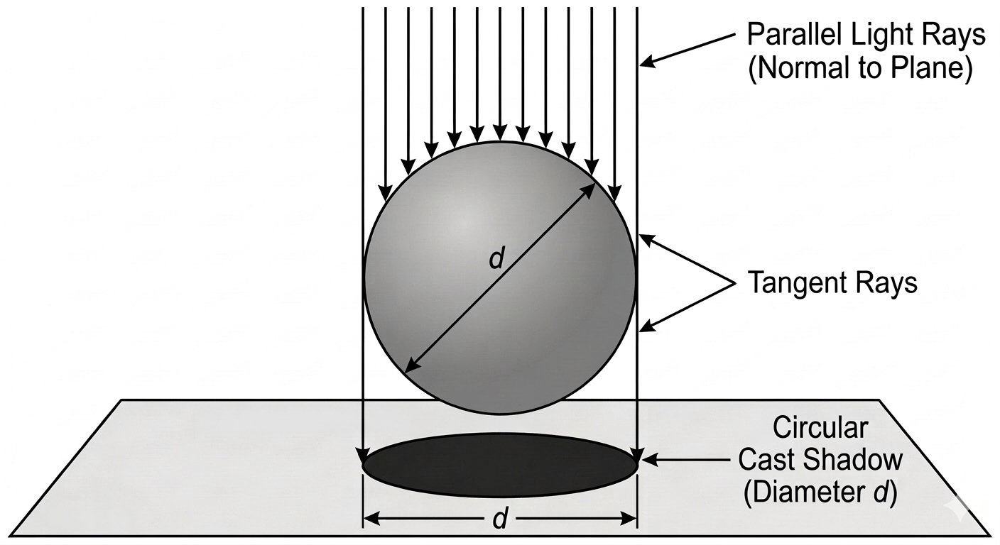
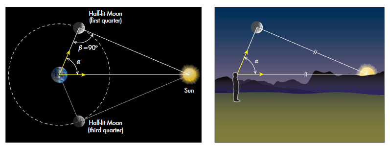
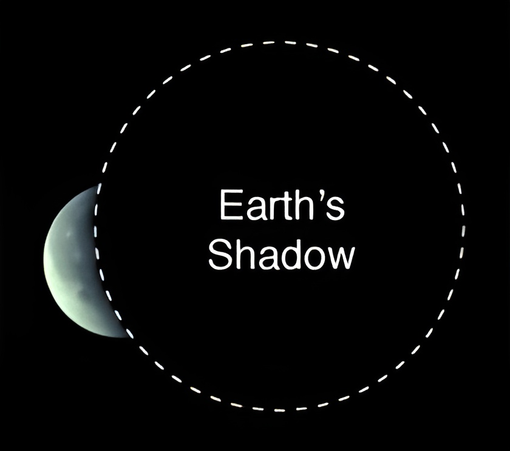

Measuring the Universe: Ep. 1 - The Lord of the Ladders Pt. 1
- tags
- #Physics #Astronomy
- published
- reading time
- 8 minutes
TL;DR
This is a series about… the entire universe. But before tackling how big the universe is, or what makes stars shine, or what makes them go boom and form the big black scary cosmic supervillains known as neutron stars and black holes, we take a moment to pause and ponder and retrace some of the footsteps of the intellectual giants of the past.
What and Why?
The name is pretty self-explanatory - the cosmic distance ladder is the ladder we climb to measure distances on a cosmic scale. Each step of the ladder takes something of a known size to deduce the size of the next big thing. But maybe you’re not already fascinated by questions such as “how do we know how big the sun is”, or “how do we know how far away Sagittarius A* is”, maybe you just want to bask in the glorious accretion disks of black holes or something like that. In this series I’d like to make the case that you cannot truly know or appreciate astrophysical and cosmological phenomena. We’ll cover a lot in this series starting from how we know that the earth is round to why it has to be round, and why it isn’t a star to why the stars are, and why some stars explode to death and why others become diamonds, and from how we know that light has a finite speed to how we measure that speed, and so on. What relationship does physics at those scales have with the cosmic distance ladder?
Well, everything. To know about distant stars and galaxies you need to see them and measure the light coming from them, say their brightness and so on, but to measure their true brightness you need to know how far away they are since apparent brightness, how bright they appear from our vantage point, goes down as the square of distance. You get the idea. On another front, once you know the distances, you can also figure out the masses of various objects using Newton’s law of universal gravitation (or Kepler’s laws of planetary motion, whichever you fancy more), but we’ll vow not to cheat and figure out Newton’s law of gravity (and hence Kepler’s laws) based on this ladder alone (before starting to use it to build our ladder further). Exactly doing all this would be tedious, but fortunately for you guys I’m no Kepler so I won’t be able to spam you with a thousand-page paper detailing planetary orbits - I’ll just summarise the techniques.
So in a nutshell, distance-measuring is the quintessential foundation on which all of what we know about the distant objects in the universe, and the universe as a whole for that matter, stands. There’s a plethora of fun things I’ve got to tell you about and I thought that there’s no better string tying them all together than the cosmic distance ladder, so here we are. We’ll not be focusing on exact numbers, but just the physical principles at play while getting a measurement. OK, ’nuff said, the ladder ain’t building itself, so let’s roll!
The Rails of the Ladder - Debunking Flat-Earthers Since 4th Century BCE
At the very foundation of any ladder lie its two rails, on which all rungs stand. And the rails of the cosmic distance ladder are formed by the fact that the Earth is round. It’s quite astounding that flat-earthers accept all of astronomy but the fact that the earth is round, and yet nearly all of the science of astronomy is based on the fact that the earth is precisely NOT flat. Anyway, it’s a matter of simple observation - when old people didn’t have their phones back in the day, they had to look at the actual celestial objects instead of watching documentaries about them. Aristotle saw the shape of the earth’s shadow on the moon throughout several lunar eclipses, and the round edge of the shadow was a dead giveaway. More formally, there’s a rigorous mathematical proof of the fact that if all 2D-projections of some solid is circular then the solid has to be a sphere and vice versa, so it’s mathematically impossible for the earth to not be one. Well, I’m exaggerating a little, since the earth is an oblate spheroid, and the projections are ever so slightly elliptical, but to scale, despite the earth’s imperfections, it’s still more accurately a sphere than any spherical model you might have seen - the max and the min radii vary by just a third of a percent from each other.
The First Rung - The Radius of the Earth
Once you’ve established that the earth is round, the next natural step is to measure its circumference, and from that, its radius. I think you all know the story. During summer solstice, Syene has a directly overhead sun at 12PM, while at Alexandria it was 7 degrees off. Let’s say that the distance between Syene and Alexandria is D. So if you take the ratio between 7 degrees and 360 degrees, it must be the same as the ratio between D and the circumference of earth, and hence its radius.
Second, Third, and Fourth - A Game of Shadows
The next three rungs are obtained immediately when you combine Aristotle and Eratosthenes. If you’ve ever sighed at your inability to kill two birds with a singular stone, here’s your chance to witness killing three and a half - the radius of the moon, the distance from earth to moon, and the distance from earth to sun, and, as a bonus, the radius of the sun (which I count as half a bird since we don’t need it to form any higher rungs of the cosmic distance ladder)!
First note, as shown below, that if you know the earth’s radius, the shadow formed by sunlight falling onto the earth is just a circle with the same diameter as earth.

$$\text{Fig. 1: The shadow of the earth}$$This of course assumes that the sun is very far away so that the diameter of the earth is much smaller than its distance from the sun. Why’s that important? If the light rays in the above figure are not parallel, the shadow will not be of the same “size” as the sphere. How do we know that the sun is very far away in the first place?
A Brief Detour: Looking at the Sun

$$\text{Fig. 2: How far away is the sun?}$$A new moon is when the sun and the moon are nearly aligned, i.e. when the angle between them as measured from the earth is close to zero. A half-moon isn’t seen, though, when the moon is done with half of half, or a quarter, of its orbit (why half of half? Since for every full revolution, the moon goes through two phase cycles, new moon to new momon is half the lunar period of 28 days - 14 days). A half-moon is seen when the earth and the sun make an angle of 90° at the moon, as shown in the above figure. This means that measuring the angle $\alpha$, we can say the following:
$$ \cos \alpha = \frac{\text{Distance from Earth to Moon}, d_M}{\text{Distance from Earth to Sun}, d_S} $$
Note that the larger $d_S$ is compared to $d_M$, the smaller the angle $\alpha$ will be. Thus by measuring the angular distance between the new moon and the half-moon, and we can say how far away the sun is from us compared to the moon, and it turns out the sun must be about 400 times as far as the moon.
Back to the Moon
Okay, so now back to the moon. We now know that the sun is indeed very far away and we’re hence justified in assuming that the earth’s shadow is indeed of the same diameter as the earth. Now look at the following figure.

$$\text{Fig. 3: A Game of Shadows}$$As you can see, as the moon passes through the earth’s shadow during a lunar eclipse, we can notice two things. First, the time the moon takes to pass through the earth’s shadow. Second, how many “moons” fit inside the earth’s shadow. The second observation tells us the size of the moon relative to the earth’s. The first tells us the orbital speed of the moon, and from that, using $v = \omega \times r$, we get the radius of the moon’s orbit, i.e. its distance of the moon from the earth.
Now if you’ll recall, from the half-moon we already know that the sun is 400 times as far as the moon is, so when you know the radius of the earth, you know the size of its shadow, and that in turn, in one fell swoop, gives you the radius of the moon, how far away the moon is, and how far away the sun is. And, when you know the distances to the moon and the sun, you can also figure out the radius of the sun. This is because the apparent sizes of the sun and the moon from the earth are roughly the same, which means the sun must be roughly 400 times as large as the moon. I’ll let you Google the moon’s radius and “predict” the sun’s radius from that using our back-of-the-envelope style estimate. Pretty slick, eh?
BRB
This is all the carpentry I could do in a day. In my defence, though, I’ve never built a ladder before, so having built 4 rungs in a single day is pretty cool. Anyway, thanks for reading, and stay tuned for the next one!